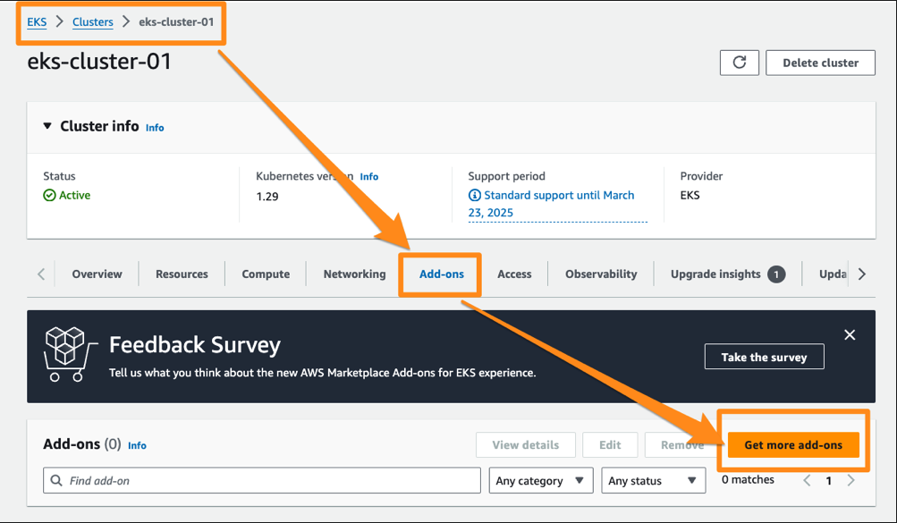

Lab 05 - Persistent Storage with EBS
In this lab you are going to re deploy the database, this time with persistent storage, using EBS volumes offered by AWS. Following diagram depicts this dynamic provisining workflow:
User
|
|
v
+---------------------+
| |
| Persistent Volume |
| Claim |
| (PVC) |
| |
+---------+-----------+
|
| Provision PV
|
+---------v-----------+
| |
| CSI Driver |
| (AWS EBS) |
| |
+---------+-----------+
|
| Provision PV
|
+---------v-----------+
| |
| Persistent Volume |
| (PV) |
| |
+---------------------+
^
|
+---------+-----------+
| |
| Storage Class |
| (gp2) |
| |
+---------------------+
- User: The user (developer/you) creates a PVC (PersistentVolumeClaim) to request storage resources for their application. The PVC specifies the desired characteristics of the storage, such as size and access mode. ⠀
- Storage Class (gp2): The StorageClass defines the properties for dynamically provisioning PVs. It includes parameters such as volume type, size, and the provisioner (CSI driver) responsible for fulfilling PVC requests. ⠀
- CSI Driver (AWS EBS): When the user creates the PVC, the Kubernetes control plane interprets the request and uses the StorageClass (gp2) to determine which provisioner (CSI driver) is responsible for provisioning the PV. ⠀
- Persistent Volume (PV): The CSI driver provisions a PV in response to the PVC creation request, based on the specifications defined in the PVC and the associated StorageClass (gp2).
⠀ In summary, the StorageClass defines the policies and provisioner used for dynamically provisioning PVs. When a user creates a PVC, the Kubernetes control plane uses the specified StorageClass to determine how to provision the PV, ultimately triggering the CSI driver to fulfill the PVC request.
Lets see this in action now.
Add Amazon EBS CSI Driver
Create a IAM Role for CSI Driver using eksctl as :
eksctl create iamserviceaccount \
--name ebs-csi-controller-sa \
--namespace kube-system \
--cluster eks-cluster-01 \
--role-name AmazonEKS_EBS_CSI_DriverRole \
--role-only \
--attach-policy-arn arn:aws:iam::aws:policy/service-role/AmazonEBSCSIDriverPolicy \
--approve
validate:
eksctl get iamserviceaccount --cluster eks-cluster-01
From EKS Console, * Select cluster * From Add-ons select Get more add-ons

- Select Amazon EBS CSI Drive and go Next

- Select
AmazonEKS_EBS_CSI_DriverRolecreated above. -
Next
-
From Review and add screen proceed with Create.

Validate the add-on is available from EKS Cluster.

validate the CSI Components are created with
kubectl get pods -n kube-system -l "app.kubernetes.io/component=csi-driver"
[sample output]
NAME READY STATUS RESTARTS AGE
ebs-csi-controller-c95fcc9fb-qjk9h 6/6 Running 0 116s
ebs-csi-controller-c95fcc9fb-rd64g 6/6 Running 0 116s
ebs-csi-node-57n2m 3/3 Running 0 116s
ebs-csi-node-dmp49 3/3 Running 0 116s
Recreating DB with EBS Volume
List the storage class available
kubectl get sc
[sample output]
NAME PROVISIONER RECLAIMPOLICY VOLUMEBINDINGMODE ALLOWVOLUMEEXPANSION AGE
gp2 (default) kubernetes.io/aws-ebs Delete WaitForFirstConsumer false 16h
This is the default storage class created by EKS. When you invoke this storage class with a PVC, the CSI driver will call the AWS APIs to create a actual EBS Volume and configure it as a PV.
To watch this in action, start monitoring the following in a separate console:
watch kubectl get pods,pvc,pv,sc
Now redeploy the database, this time with a PVC configuration added as ,
kubectl delete -f db-deploy.yaml
kubectl apply -f db-deploy-pvc.yaml
At this time, you shall see the db pod in pending state
e.g.
NAME READY STATUS RESTARTS AGE
pod/db-58b4db7665-rh6mv 0/1 Pending 0 39s
Describe the pod as:
kubectl describe pod -l "role=db"
to see the issue in the events as:
Events:
Type Reason Age From Message
---- ------ ---- ---- -------
Warning FailedScheduling 93s (x2 over 108s) default-scheduler 0/2 nodes are available: persistentvolumeclaim "db-pvc" not found. preemption: 0/2 nodes are available: 2 Preemption is not helpful for scheduling.
This is because of the PVC missing. Now create a claim spec as
File : db-pvc.yaml
kind: PersistentVolumeClaim
apiVersion: v1
metadata:
name: db-pvc
spec:
accessModes:
- ReadWriteOnce
volumeMode: Filesystem
resources:
requests:
storage: 1Gi
storageClassName: gp2
and apply
kubectl apply -f db-pvc.yaml
at this time, you should see the PV created and bound with pvc
NAME STATUS VOLUME CAPACITY ACCESS MODES STORAGECLASS VOL
UMEATTRIBUTESCLASS AGE
persistentvolumeclaim/db-pvc Bound pvc-94165721-83f9-4110-b37c-4e3c9eb0c951 1Gi RWO gp2 <un
set> 4m52s
NAME CAPACITY ACCESS MODES RECLAIM POLICY STATUS CLAIM
STORAGECLASS VOLUMEATTRIBUTESCLASS REASON AGE
persistentvolume/pvc-94165721-83f9-4110-b37c-4e3c9eb0c951 1Gi RWO Delete Bound instavote/db-pv
c gp2 <unset> 4m47s
Your pod at this time progresses further from pending state, however goes in a CrashLoopBackOff state.
NAME READY STATUS RESTARTS AGE
pod/db-58b4db7665-rh6mv 0/1 CrashLoopBackOff 6 (37s ago) 11m
To find why, check the logs
kubectl logs -l "role=db"
[sample output]
initdb: directory "/var/lib/postgresql/data" exists but is not empty
It contains a lost+found directory, perhaps due to it being a mount point.
Using a mount point directly as the data directory is not recommended.
Create a subdirectory under the mount point.
The database cluster will be initialized with locale "en_US.utf8".
The default database encoding has accordingly been set to "UTF8".
The default text search configuration will be set to "english".
Data page checksums are disabled.
This is happening because the EBS volume created comes with lost+found directory, which needs to be cleaned up before starting the database. To do that, you could add a init container to existing deployment as
File : db-deploy-pvc.yaml
....
spec:
initContainers:
- name: init-pg-data
image: busybox:latest
command: ['sh', '-c', 'rm -rf /var/lib/postgresql/data/*']
volumeMounts:
- name: db-vol
mountPath: /var/lib/postgresql/data
containers:
- image: postgres:9.4
imagePullPolicy: Always
name: db
env:
- name: POSTGRES_HOST_AUTH_METHOD
value: trust
You need to add the initContainer block inside the spec, at the same level as existing container block.
apply the changes
kubectl apply -f db-deploy-pvc.yaml
and you should now see the pod running, this time with a EBS volume
NAME READY STATUS RESTARTS AGE
pod/db-7b7fd4bcc7-z7zdr 1/1 Running 0 47s
You should also see the EBS volume been provisionined and attached on the same EC2 instance that is running the db pod.

Summary
In this lab you learnt how to provision persistent storage, mount it on a pod and how to do this dynamically using the EBS as storage backend, gp2storage class creted by EKS and by adding a CSI Driver ( Provisioner) for EBS.